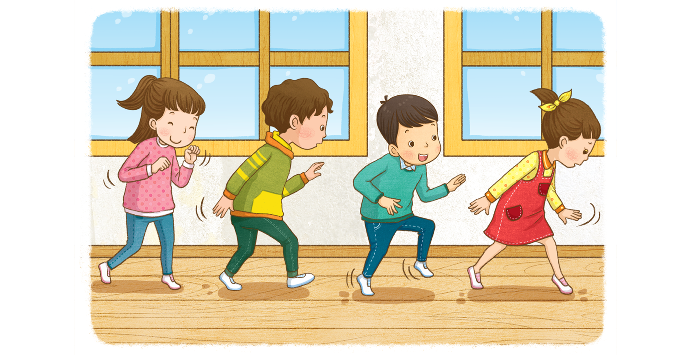

풀밭에서 무엇을 보았는지 말해 보세요.
지난여름에 풀밭에서 개미를 보았습니다. 개미들은 먹이를 함께 옮기고 있었습니다.
잔디가 자라는 모습과 노란 민들레가 피어 있는 모습을 보았습니다.
풀밭에 핀 작은 풀꽃과 벌과 나비 등을 보았습니다.
로 풀밭을 걸으면 어떤 느낌이 들지 상상해 보세요.
어휘 쏙쏙
맨발
아무 것도 신지 아니한 발.
잔디가 자라나서 발이 간질간질할 것 같습니다.
뾰족한 것에 발을 다칠까 봐 무서운 생각이 들 것 같습니다.
흙을 밟으면 폭신폭신해서 기분이 좋을 것 같습니다.
톡톡 도움말
발바닥이 간질간질할 것 같아요.
꽃을 밟을까 봐 조마조마해요.
교실을 풀밭이라 생각하고 천천히 걸어 보세요.
